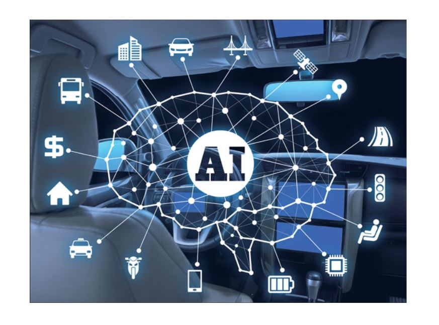
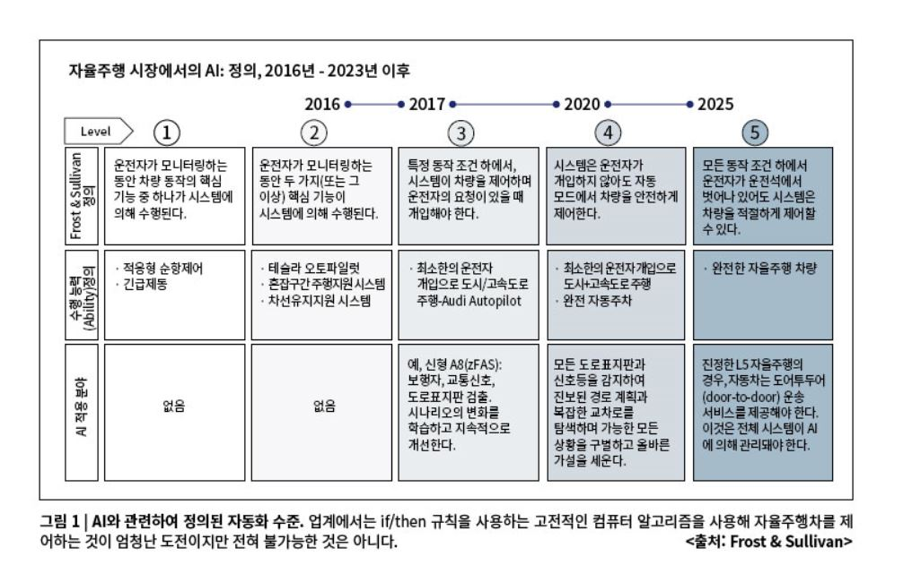

AI: 자율주행차

AI의 정의
AI(Artifical Intelligence), 인공지능은 기계가 경험을
통해 학습하고 새로운 입력 내용에 따라 기존 지식을 조정하며 사람과 같은
방식으로 과제를 수행할 수 있도록 지원하는 기술이다.
체스를 두는 컴퓨터에서부터 직접 운전을 하는 자동차에 이르기까지 오늘날 대부분의 인공지능
사례들은 딥러닝과 자연어 처리에 크게 의존하고 있으며, 이러한 기술들을
통해 대량의 데이터를 처리하고 데이터에서 패턴을 인식함으로써 특정한
과제를 수행하도록 컴퓨터를 훈련할 수 있다.
자율주행차

인간 지능을 모사한 인공지능(AI)이 요즘 가장 뜨거운 기술 키워드가
아닌가 싶다. 자동차 산업은 대규모 R&D 투자, 기술 기업들과의 파트너십
구축, AI 스타트업 인수 등을 통해 혁신적인 AI 시스템을 구축하고 있다.
인공지능이 자동차와 결합하면서, 자동차 산업은 또 다른 길에 들어서고
있다.
IBM 인공지능 컴퓨터 ‘왓슨(Watson)과 GM ’온스타(OnStar)‘ 플랫폼을
결합한 ’온스타 고(OnStar Go)'에서부터 AI 기반 자율주행 기술에 대한
토요타의 10억 달러 투자에 이르기까지 자동차와 AI의 결합은 시대의
거스를 수 없는 대세로 굳혀지는 분위기다. 이러한 변화는 AI가 인간
운전자를 대체할 수 있는 최종 대안이라는 생각을 반영한다.
자율주행차에서 인공지능이 주목받고 있지만, 사실 많은 자동차 분야 중
하나에 불과하다. AI는 안전성과 자율주행 외에도 음성인식, 컴퓨터 비전,
커넥티드카, 가상 도우미 등 여러 분야에 사용된다. 1970년대에 이미
무인자동차(Driverless car) 개발이 시도되었지만, 적절한 기술의 부재로
자율주행차는 수십 년 동안 꿈에 불과했다. 그러나 작고 강력한 컴퓨터와
GPS 시스템, AI 개발과 함께 자율주행차는 꿈이 아닌 현실이 되고 있다.
이전에는 상대적으로 소수의 기업만이 완전 자율주행 모델을 개발하고 있었지만,
점점 더 많은 자동차 제조사들이 이 방향으로 눈을 돌리고 있다. 실제로 많은
회사들은 운전자를 보조하는 기능들을 도입함으로써 AI 기반 기능에 신중한 접근을
취하고 있으며 여전히 첨단 안전 기능을 갖춘 자동차를 선보이고 있다. 자동제동
시스템, 충돌회피 시스템, 보행자 및 자전거 경고 시스템, 측면차량 경고 시스템,
지능형 순항제어 시스템 등은 AI로 구동하는 기능 중 일부에 불과하다.
자율주행차의 도입은 기존 교통체계와 자동차 산업 생태계를 새롭게
변화시킬 것이다. AI는 인간 운전자를 대신하기에, 신뢰할 수 있고
‘똑똑’해야 한다. 자율주행차에서 데이터 소유권과 소프트웨어 유효성
검증 외에도 AI의 진정한 능력을 둘러싼 불확실성도 제거해야 한다.